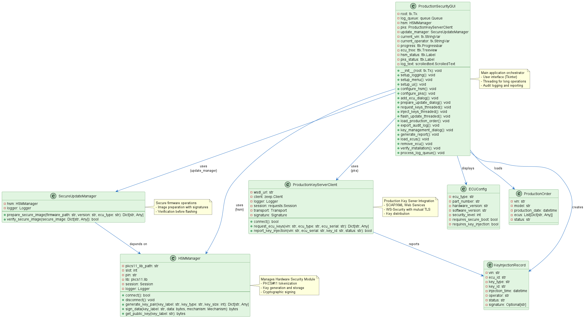

Architecture
System Design Overview
The PSMS is designed with a modular, layered architecture:
{kind=link}

Figure 1: System architecture showing layered components and data flow
┌─────────────────────────────────┐
│ GUI Application (Tkinter) │
│ - User Interface │
│ - Logging & Reporting │
└────────────┬────────────────────┘
│
┌────────────┴────────────────────┐
│ Core Manager Layer │
│ ├─ HSM Manager │
│ ├─ PKS Client │
│ └─ Update Manager │
└────────────┬────────────────────┘
│
┌────────────┴────────────────────┐
│ Security & Crypto Layer │
│ ├─ PKCS#11 Interface │
│ ├─ RSA/AES Encryption │
│ └─ Digital Signatures │
└────────────┬────────────────────┘
│
┌────────────┴────────────────────┐
│ Integration Layer │
│ ├─ SOAP/WS-Security │
│ ├─ Mutual TLS │
│ └─ XML Processing │
└─────────────────────────────────┘
Core Components
1. HSMManager
The Hardware Security Module Manager handles all HSM-related operations:
Connection management to PKCS#11 devices
Key generation (RSA, symmetric)
Digital signing operations
Key retrieval and management
Session lifecycle
Key Attributes:
pkcs11_lib_path- Path to PKCS#11 libraryslot- HSM slot numberpin- User authentication PINsession- Active PKCS#11 session
Key Methods:
connect()- Establish HSM connectiongenerate_key_pair()- Create RSA key pairssign_data()- Sign data with private keyget_public_key()- Retrieve public key
2. ProductionKeyServerClient
SOAP-based client for communicating with the PKS:
Mutual TLS authentication
WS-Security XML signatures
Key request/delivery
Injection status reporting
Key Attributes:
wsdl_url- PKS WSDL endpointsession- Requests session with certificatestransport- SOAP transport layersignature- WS-Security signature handler
Key Methods:
connect()- Initialize SOAP clientrequest_ecu_keys()- Request vehicle-specific keysreport_key_injection()- Report injection status
3. SecureUpdateManager
Manages secure firmware update lifecycle:
Firmware image preparation
Signature generation
Image verification
Metadata management
Key Methods:
prepare_secure_image()- Create signed firmware packageverify_secure_image()- Validate image integrity
4. ProductionSecurityGUI
Main user interface with:
Session management
Production order handling
ECU configuration
Threading for long operations
Audit logging
Report generation
Data Flow Diagrams
Key Request Flow:
User enters VIN
│
▼
Request Keys from PKS
│
▼
SOAP Request with WS-Security
│
▼
PKS Validates VIN & Authorization
│
▼
PKS Retrieves Vehicle-Specific Keys
│
▼
PKS Returns Signed Keys
│
▼
Client Verifies Signature
│
▼
Store Keys (encrypted)
Secure Update Flow:
Load Firmware File
│
▼
Calculate Firmware Hash
│
▼
Create Signed Metadata
│
▼
Sign with HSM Private Key
│
▼
Package Secure Image
│
▼
Transfer to ECU
│
▼
ECU Verifies Signature
│
▼
ECU Flashes Firmware
Security Model
Authentication:
Mutual TLS between PKS and client
HSM PIN-based access control
X.509 certificate validation
Integrity:
RSA-2048 signatures on all operations
SHA-256 hash verification
XML signature on SOAP messages
Confidentiality:
AES-128/256 encryption of sensitive data
TLS 1.2+ for network communication
Secure key storage in HSM
Non-repudiation:
Comprehensive audit logging
Operator identification
Timestamp recording
API Layers
External API:
GUI controls and dialogs
File I/O for orders and reports
Error handling and user feedback
Manager API:
HSM operations
PKS communication
Update preparation
Security API:
Cryptographic operations
Key handling
Signature verification
Threading Model
Long-running operations execute in background threads:
Key requests
Key injection
Firmware flashing
Report generation
Main event loop remains responsive via queue.Queue.
Database/Storage
Data Structures:
ECUConfig- ECU metadataProductionOrder- Order detailsKeyInjectionRecord- Audit trail
File Formats:
JSON for configuration and orders
PEM for certificates and keys
Plain text for audit logs
Error Handling
Comprehensive error handling with:
Exception logging
User notification dialogs
Recovery mechanisms
Rollback capabilities
See Troubleshooting Guide for common issues.